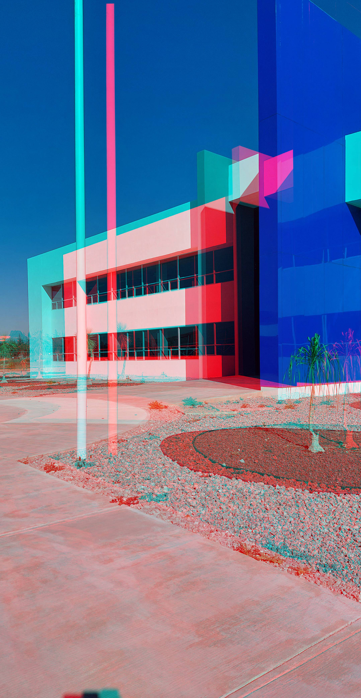
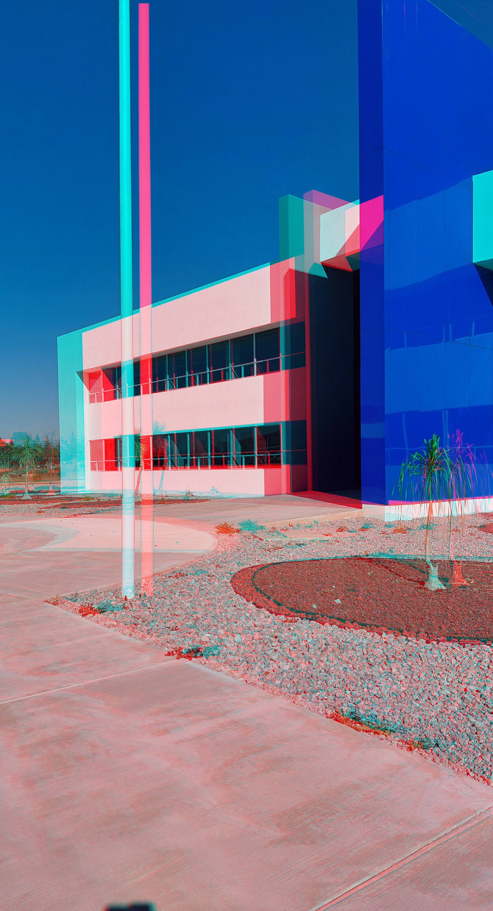
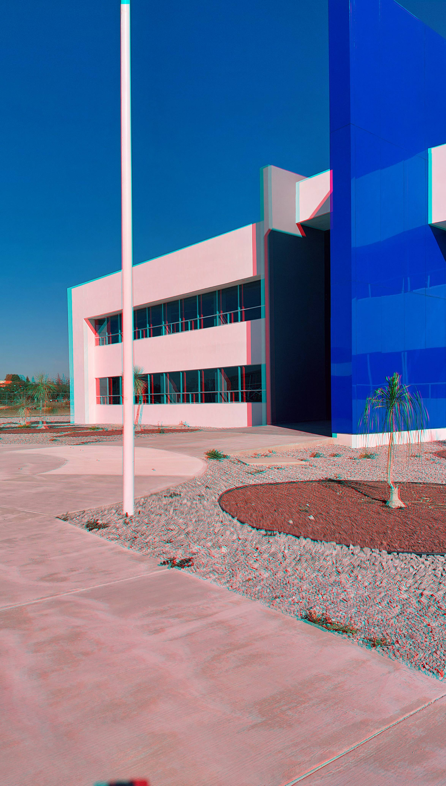

Esta es la perspectiva desde la parte lejana de la foto personal

Esta es la perspectiva desde la parte cercana de la foto personal

Esta es la perspectiva desde la parte medio de la foto personal
Esta es la perspectiva desde la parte lejana de la foto de Infraestructura

Esta es la perspectiva desde la parte cercana de la foto de Infraestructura

Esta es la perspectiva desde la parte media de la foto de Infraestructura

Esta es la perspectiva desde la parte lejana de la foto de un objeto

Esta es la perspectiva desde la parte cercana de la foto de un objeto

Esta es la perspectiva desde la parte media de la foto de un objeto